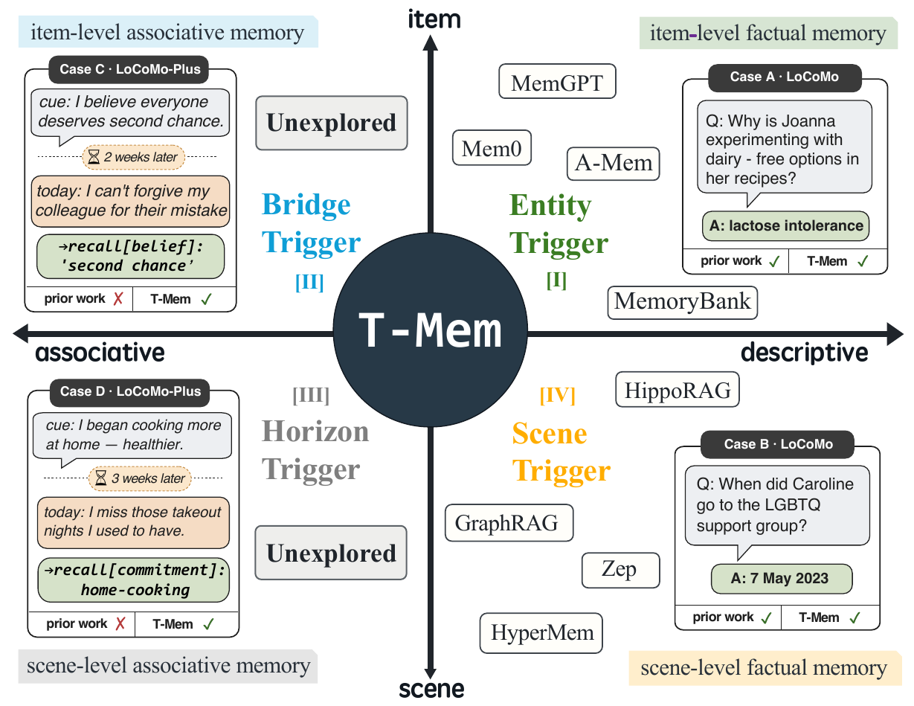
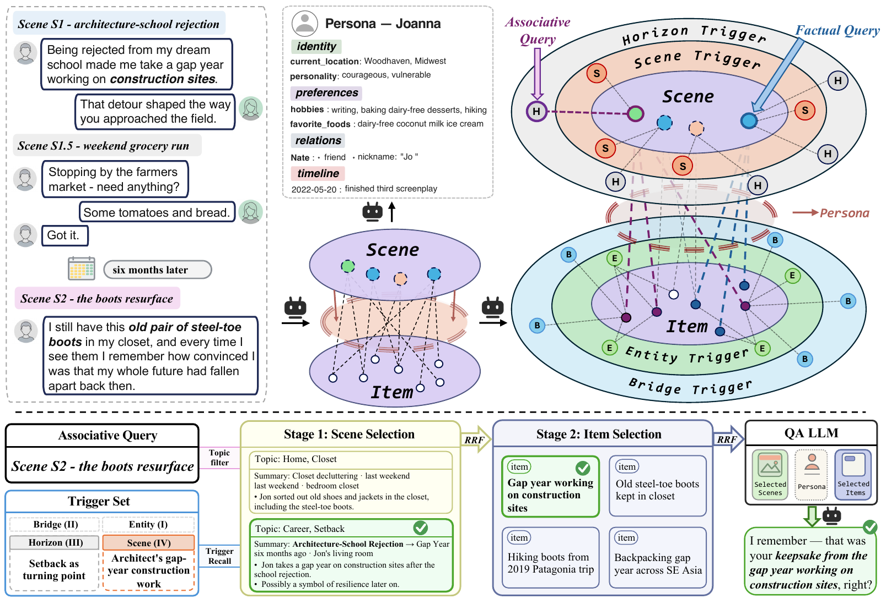
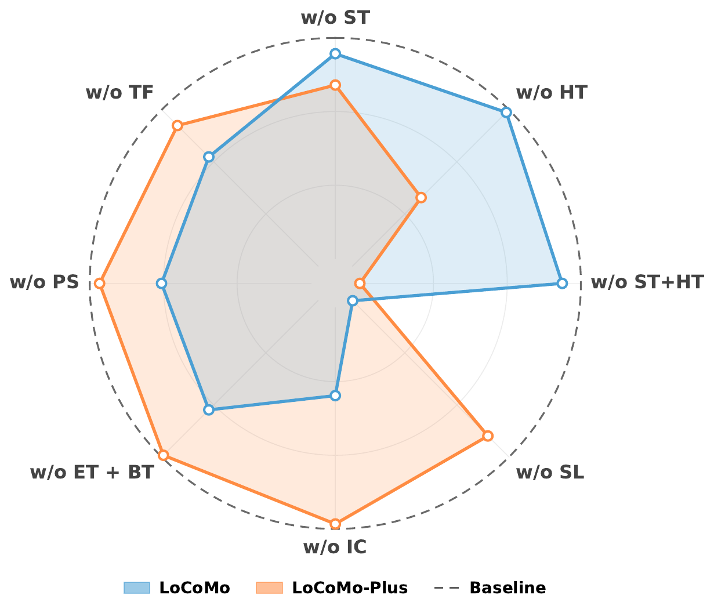
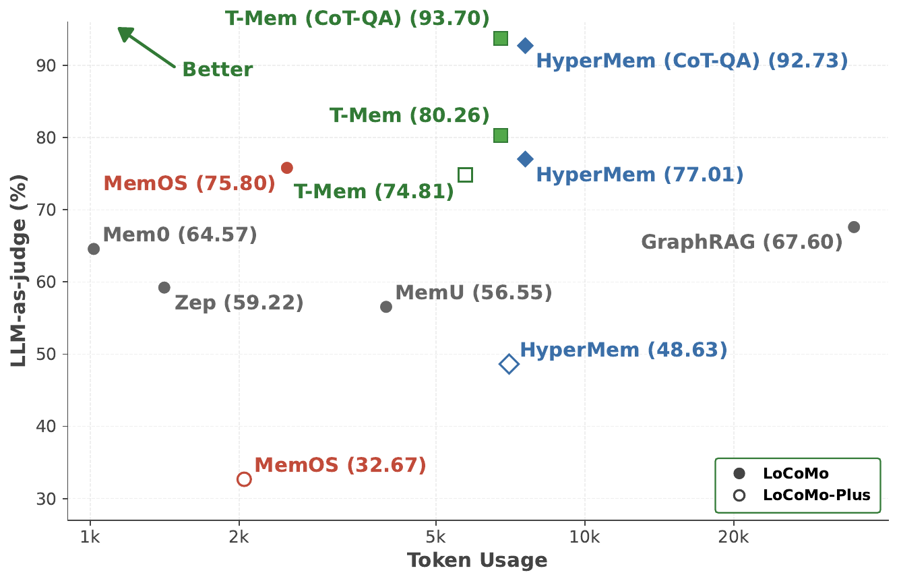
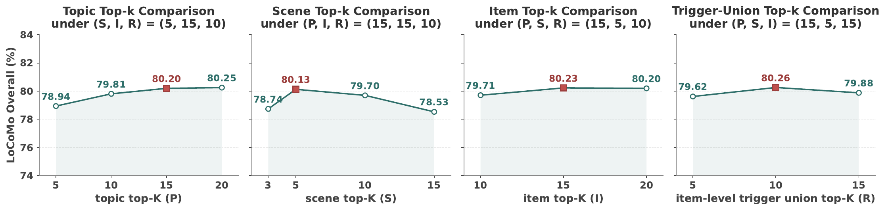

Descriptive recall
A question resembles the memory.
“When did Caroline join the support group?” points to a fact that names the same group.
Entity triggers · Scene triggers
EMNLP 2026 MAIN CONFERENCE
Rehearsing tomorrow’s questions at write time.
Long-term memory for both descriptive and associative recall.
Accepted to EMNLP 2026 Main Conference · Camera-ready version submitted
LoCoMo accuracy
LoCoMo-Plus accuracy
Cross-benchmark gap
Official benchmark protocols · LLM-as-judge accuracy · LoCoMo-Plus Cognitive subset
01 / The idea
Similarity-based retrieval works well when a question resembles a stored memory. But a future question may be connected to a past conversation through a situation, a consequence, or a personal arc—without sharing its wording.
T-Mem prepares for these connections when memories are written. It creates triggers: descriptions of the cues and future situations under which a memory will be useful. Across two evidence granularities—atomic items and conversational scenes—four trigger families support both ways of remembering.
Descriptive recall
“When did Caroline join the support group?” points to a fact that names the same group.
Entity triggers · Scene triggers
Associative recall
A question about a team-dinner venue can make a colleague’s allergy, mentioned months earlier, matter again.
Bridge triggers · Horizon triggers

02 / The method
T-Mem builds a typed graph of scenes, items, and topic labels. At read time, a topic → scene → item cascade combines lexical and dense rankings with reciprocal rank fusion. Trigger recall can bypass the topic prefilter, bringing relevant evidence into the candidate pool even when the query falls outside its similarity neighborhood.

Segment by event closure, then assign growing, multi-label topics.
Extract individual facts and preserve connections across scenes.
Give each item descriptive concepts and future-use situations.
Describe an exchange and project its relevance into future contexts.
These are conceptual construction stages. The reproduction scripts include indexing, trigger building (stage 4b), retrieval, persona extraction, and evaluation.
03 / Results
The main comparison follows each benchmark’s official protocol. Memory construction uses GPT-4.1-mini and the dense encoder is bge-m3. LoCoMo uses GPT-4o-mini for answering and judging; LoCoMo-Plus uses GPT-4o for answering and Gemini-2.5-Flash as judge.
| Method | Single-hop | Multi-hop | Temporal | Open Domain | Overall | F1 |
|---|---|---|---|---|---|---|
| MIRIX | 68.22 | 54.26 | 68.54 | 46.88 | 64.33 | 28.10 |
| Mem0 | 73.33 | 58.75 | 52.34 | 45.83 | 64.57 | 43.46 |
| Zep | 66.23 | 52.12 | 54.82 | 33.33 | 59.22 | 41.23 |
| Memobase | 73.12 | 64.65 | 81.20 | 53.12 | 72.01 | 50.18 |
| MemU | 66.34 | 63.12 | 27.10 | 50.00 | 56.55 | 35.15 |
| Supermemory | 67.30 | 51.12 | 31.77 | 42.67 | 55.34 | 34.87 |
| MemOS | 81.09 | 67.49 | 75.18 | 55.90 | 75.80 | 45.27 |
| HyperMem | 84.34 | 62.29 | 79.44 | 47.92 | 77.01 | 49.93 |
| T-Mem | 85.97 | 69.15 | 82.55 | 55.21 | 80.26 | 51.96 |
Main-paper protocol, averaged over three runs. T-Mem improves Overall by 3.25 percentage points over HyperMem. Baseline numbers other than HyperMem are from Li et al. (MemOS, 2025), as reported in the paper.
| Method | LoCoMo (%) | LoCoMo-Plus (%) | Gap (pp) ↓ |
|---|---|---|---|
| GPT-4o full context | 66.14 | 21.05 | 45.09 |
| Gemini-2.5-Pro full context | 71.46 | 26.06 | 45.40 |
| Mem0 | 64.94 | 15.80 | 49.14 |
| SeCom | 64.97 | 14.90 | 50.07 |
| A-Mem | 66.70 | 17.20 | 49.50 |
| MemOS | 75.80 | 32.67 | 43.13 |
| HyperMem | 77.01 | 48.63 | 28.38 |
| T-Mem | 80.26 | 74.81 | 5.45 |
LoCoMo-Plus denotes the Cognitive subset. The full-context baselines use the complete raw dialogue without a memory mechanism. Mem0, SeCom, A-Mem and full-context numbers are from Li et al. (LoCoMo-Plus, 2026); this table follows the paper’s cross-benchmark comparison.
With the judge fixed at GPT-4o-mini, GPT-5.1 for both memory construction and answering reaches 84.85% LoCoMo Overall accuracy. These configurations vary the build and QA models and are reported separately from the main benchmark above.
| Build model | QA model | Overall (%) |
|---|---|---|
| GPT-4.1 | GPT-4o-mini | 78.31 |
| GPT-4.1 | GPT-4.1 | 82.51 |
| GPT-5.1 | GPT-4o-mini | 81.36 |
| GPT-5.1 | GPT-5.1 | 84.85 |
Using open-weight Qwen3-32B for construction, with QA and judge fixed at GPT-4o-mini, yields 75.45% (versus 80.26% for GPT-4.1-mini construction).
Under HyperMem’s GPT-4.1-mini + seven-step CoT answer-generation protocol, T-Mem scores 93.70% accuracy / 16.97 F1, compared with HyperMem’s reported 92.73% / 15.78. The prompt produces much longer answers, so these scores are not directly comparable with the official-protocol table.
04 / Analysis



05 / Explore the pipeline
Inspect stored outputs from a real LoCoMo conversation: raw turns, scenes, extracted facts, all four trigger families, and retrieved answers. The explorer uses pre-computed artifacts; the Run locally view explains how to reproduce the pipeline.
06 / Citation
Accepted to the EMNLP 2026 Main Conference. The arXiv citation below remains available while the proceedings record is being published.
@misc{guo2026tmem,
title = {T-Mem: Memory That Anticipates, Not Archives},
author = {Guo, Weidong and Wang, Dakai and Wang, Zixuan and Liu, Hui and Xu, Yu},
year = {2026},
eprint = {2606.15405},
archivePrefix = {arXiv},
primaryClass = {cs.CL},
note = {Accepted to EMNLP 2026 Main Conference},
url = {https://arxiv.org/abs/2606.15405}
}